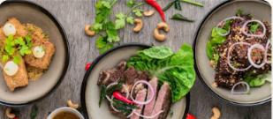
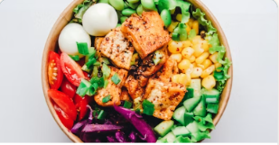
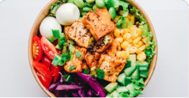

Taniti Fish MarketLocal
Fresh daily catch served with local rice and tropical sides. A Taniti institution.
Food & Drink
10 restaurants spanning local fish cuisine, American-style meals, and Pan-Asian flavours — plus grocery stores and a 24-hour convenience store.
🍺 Note: Alcohol is not served between midnight and 9:00 a.m. · Drinking age is 18.

Fresh daily catch served with local rice and tropical sides. A Taniti institution.
Family recipes passed down for generations. Specialises in grilled fish and coconut-based dishes.
Casual open-air dining with fresh local fish, rice dishes, and tropical fruit platters.

Overlooks the bay. Local fish and rice menu with daily specials depending on the morning catch.
A relaxed harbour-side spot popular with locals and visitors alike. Cash-friendly prices.
Burgers, steaks, and comfort food with a Tanitian twist. Full bar. Live music some evenings.

Classic American-style breakfasts and lunches. Popular with families and cruise passengers.
Casual café-style American food. Great for a quick lunch or relaxed dinner.
A curated menu of Chinese, Japanese, and Thai-influenced dishes made with fresh local ingredients.
Ramen, sushi, and noodle dishes in a relaxed setting. Vegetarian options available.
Full selection including imported goods. Accepts credit cards.
Large local supermarket near Taniti City centre.
Neighbourhood grocery with fresh produce and local products.
Open 24 hours a day, 7 days a week. Snacks, drinks, essentials.
This button represents an external provider booking link in the interactive prototype.